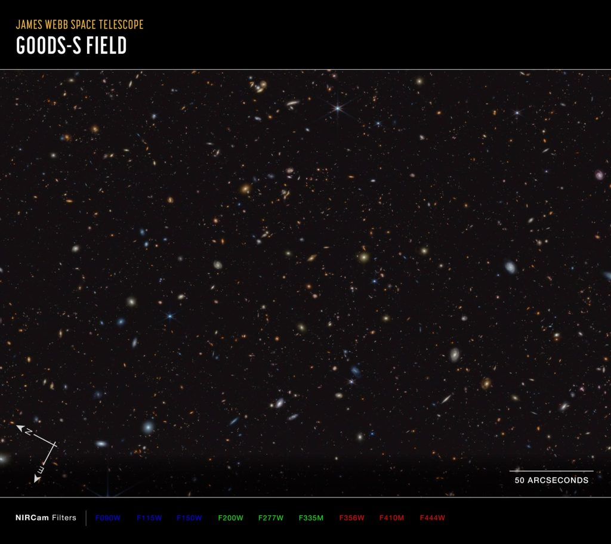

Big Bang ခေါ်တဲ့ မဟာပေါက်ကွဲမှုကြီး အပြီး နှစ်သန်း ၆၀၀ လောက် အကြာမှာ စတင် မွေးဖွား ခဲ့ကြတဲ့ ဒီ ရှေးဦး ပထမမျိုးဆက် ဂလက်ဆီ တွေဟာ ရှုပ်ထွေးတဲ့ ဖွဲ့စည်းပုံနဲ့ ကြယ် စုဖွဲပုံတွေ ရှိကြတယ်လို့ ယခုနောက်ဆုံး ထုတ်ပြန်လိုက်တဲ့ သုတေသန စာတမ်းတစ်စောင်မှာ တင်ပြ ထားပါတယ်။
ဒီ သုတေသန စာတမ်းဟာ အာကာသ ဟင်းလင်းပြင် ထဲက အလွန် သေးငယ်တဲ့ စိတ်အပိုင်းလေး နှစ်ခုကို တစ်လအကြာ လေ့လာအပြီး ထွက်ပေါ်လာတဲ့ ရလဒ် ဖြစ်ပါတယ်။ ဒီ အစိတ်အပိုင်းလေး နှစ်ခု အနက် တစ်ခုဟာ Ursa Minor နက္ခတ်ခွင် အတွင်း တည်ရှိပြီး နောက်တစ်ခုကတော့ Fornix cluster ကြယ်စုအလွန်မှာ တည်ရှိပါတယ်။
ဒီ ရပ်ဝန်း နှစ်ခု အတွင်းမှာ လက်ရှိ အချိန်အထိ ပထမ မျိုးဆက် ဂလက်ဆီပေါင်း ၇၀၀ ကျော်ကို အသစ်ရှာဖွေ တွေ့ရှိ ထားပါတယ်။ ဒီ ဂလက်ဆီ တွေဟာ စကြာဝဠာရဲ့ အစောဦး ကာလမှာ ဘယ်လိ အခြေအနေတွေ ရှိခဲ့သလဲ ဆိုတာကို ထင်ဟပ် ပြနေပါတယ်။
အကယ်လို့ စကြာဝဠာရဲ့ သက်တမ်း တစ်ခုလုံးကို နှစ်နာရီ ကြာတဲ့ ရုပ်ရှင်တစ်ခုလို သဘောထား လိုက်မယ်ဆိုရင် ဒီ ဂလက်ဆီတွေ မွေးဖွားတဲ့ ကာလဟာ ပထမ ၅ မိနစ်စာ ရုပ်ရှင် အပိုင်းနဲ့ ထပ်တူ ညီမှာ ဖြစ်ပါတယ်။ ဒီ ပထမ မျိုးဆက် ဂလက်ဆီ တွေထဲမှာ ဟီလီယံထက် ပိုမို လေးလံတဲ့ ဒြပ်စင်တွေကို မွေးဖွား ပေးခဲ့ကြတာ ဖြစ်ပါတယ်။ ဒီ ဂလက်ဆီ တွေက မွေးဖွားပေးလိုက်တဲ့ လေးလံတဲ့ ဒြပ်စင်တွေကြောင့် ကျွန်တော်တို့ သက်ရှိတွေ ဖြစ်လာရတာ ဖြစ်ပါတယ်။
ဒီ ဂလက်ဆီတွေကို လေ့လာခြင်း အားဖြင့် စကြာဝဠာအတွင်း ပထမဆုံး ကြယ်တွေနဲ့ ဂလက်ဆီတွေ ဘယ်လို ဖြစ်လာကြသလဲ ဆိုတဲ့ မေးခွန်းကို အဖြေပေးနိုင် လိမ့်မယ်လို့ ပညာရှင်တွေက မျှော်လင့် ကြပါတယ်။
စကြာဝဠာရဲ့ သက်တမ်း နှစ်သန်း ၃၇၀ နဲ့ ၆၅၀ အကြားမှာ ဒီ ရပ်ဝန်း အသေးလေး အတွင်းမှာတင် အနည်းဆုံး ဂလက်ဆီ ၇၁၇ ခုကို မွေးဖွား ပေးခဲ့ပါတယ်။ ဒါဟာ ယခင်က ခန့်မှန်း ထားခဲ့ တဲ့ အရေအတွက်ထက် အများကြီး ပိုများ နေပါတယ်။
ဒီဂလက်ဆီတွေ အားလုံးရဲ့ အရွယ်အစား ဟာလဲ အလင်းနှစ် ထောင်ချီအောင် ကြီးမား ကြပါတယ်။ နောက်ပြီး သူတို့ အထဲမှာ ကြယ်တွေဟာလဲ ညီညီညာညာ ပျံ့နှံ့နေကြတာ မဟုတ်ပဲ အစုအဝေး လေးတွေ အများအပြားနဲ့ မွေးဖွား ပျံ့နှံ့နေတာကို တွေ့ကြရပါတယ်။
အရင်က တယ်လီစကုပ် တွေနဲ့ကြည့်ရင် ပထမ မျိုးဆက် ဂလက်ဆီ တွေကို မှုန်ပြပြပဲ မြင်တွေ့ခဲ့ ကြရပါတယ်။ ဒီ မှုန်ပြပြ အစက်လေးတွေက တကယ်တော့ ကြယ်တွေ သန်းရာပေါင်း ထောင်ပေါင်း များစွာ စုနေတဲ့ ဂလက်ဆီ တွေပါ။ အခုတော့ ဒီ ကြယ်စုတွေဟာ တိကျပြတ်သားတဲ့ ပုံသဏ္ဍာန် ရှိတယ် ဆိုတာကို ဂျိမ်းစ်ဝက်ဘ်ရဲ့ ကျေးဇူးနဲ့ တွေ့မြင် ကြရပြီ ဖြစ်ပါတယ်။
ဒီ ရပ်ဝန်းကို ယခင်ကတဲက နက္ခတ်ပညာရှင်တွေ စိတ်ဝင်တစား လေ့လာ ခဲ့ကြပြီး ဖြစ်ပါတယ်။ ဒါပေမယ့် ယခု ဂျိမ်စ်ဝက်ဘ် က ရှာပေးလိုက်တဲ့ ဂလက်ဆီ အသစ်တွေကို ယခင်က တွေ့မြင် ခဲ့ရခြင်း မရှိခဲ့ ပါဘူး။
ဂျိမ်းစ်ဝက် မတိုင်မီ က ရှာတွေ့ခဲ့တဲ့ ပထမ မျိုးဆက် ဂလက်ဆီ တွေဟာ စကြာဝဠာ ဦးပိုင်းမှာ ရှိခဲ့တဲ့ ဂလက်ဆီ တွေအထဲက အလင်းလက် အတောက်ပဆုံး ဂလက်ဆီတွေသာ ဖြစ်ပါတယ်။ ယခု ရှာတွေ့တဲ့ ဂလက်ဆီ တွေကတော့ စကြာဝဠာ အစဦး လှိုင်းထန်ချိန် ကာလမှာ ဖြစ်တည်ခဲ့တဲ့ သာမန် ဂလက်ဆီတွေ ဖြစ်ကြပါတယ်။

ဒီ ဂလက်ဆီ တွေကနေ ထွက်လာတဲ့ စွမ်းအားပြင်း ခရမ်းလွန် ရောင်ခြည် တွေဟာ စကြာဝဠာ အတွင်းက ဟိုက်ဒြိုဂျင် ဓါတ်ငွေ့ အများစုကို အဖိုဓါတ် ဆောင်တဲ့ ပရိုတွန် နဲ့ အမဓါတ် ဆောင်တဲ့ အီလက်ထရွန် တွေအဖြစ် ပြန်ကွဲသွားအောင် ခွဲထုတ် ပစ်လိုက်ပါတယ်။ ဒီ ဖြစ်စဉ်ကို Epoch of Reionizationn လို့ ခေါ်ပြီး စကြာဝဠာ သက်တမ်း နှစ် သန်း ၁၀၀၀ လောက် ကာလအထိ ဖြစ်ပွား ခဲ့ပါတယ်။
ဒီ ဖြစ်စဉ်ကြောင့် ယခုလက်ရှိ စကြာဝဠာ အတွင်း တွေ့မြင်ရတဲ့ ဟိုက်ဒြိုဂျင် ဓါတ်ငွေ့ အများစုဟာ ပရိုတွန် နဲ့ အီလက်ထရွန် တွေ အဖြစ် ကွဲထွက်နေတာ ဖြစ်ပါတယ်။
ဒီ ပထမ မျိုးဆက် ဂလက်ဆီ တွေကို လေ့လာမှုကနေ တွေ့ရှိရတဲ့ တွေ့ရှိချက် တစ်ရပ်ကတော့ ဂလက်ဆီတွေရဲ့ ၆ ပုံ တစ်ပုံလောက်မှာ ဒီ reionization ဖြစ်စဉ် ဖြစ်ပျက်နေတယ် ဆိုတဲ့ အထောက်အထားပဲ ဖြစ်ပါတယ်။ ဒါဟာ ဒီ သီအိုရီကို အတည်ပြု ပေးနိုင်လောက်တဲ့ ခိုင်မာတဲ့ အထောက်အထား မဟုတ်ပေမယ့် အရေးပါတဲ့ အထောက်အထား တစ်ခုတော့ ဖြစ်နေပါတယ်။
ဂျိမ်းစ်ဝက်ဘ် တယ်လီစကုပ်ကြီးက ရရှိတဲ့ အချက်အလက်တွေကို အသေးစိတ် သုတေသန ပြုခြင်းကနေ စကြာဝဠာရဲ့ ကနဦးက ပထမဆုံး ဂလက်ဆီ တွေနဲ့ ပါတ်သက်လို့ မဖြေရှင်း နိုင်တဲ့ မေးခွန်း အများအပြားကို သိပ်မကြာမီ အချိန်အတွင်း ဖြေရှင်း ပေးနိုင် လိမ့်မယ်လို့ ပညာရှင် တွေက ယုံကြည် နေကြပါတယ်။
Ref: James Webb Space Telescope discovers 717 ancient galaxies that flooded the universe with 1st light | Space